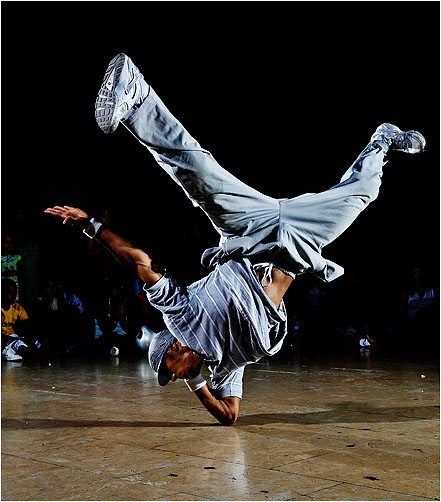

Breakdance ervaringen van mijzelf
Breakdance is een moeilijke sport. Je moet oefenen oefenen en nog eens oefenen.
Ik breakdance al 4.5 jaar. Maar wat het zo moeilijk maakt is dat je je eigen stijl erin moet vinden.
Maar als je dingen uitvoert moeten ze wel perfect zijn. Hier zit zoveel tijd in dat je dus niet in 2 jaar een van de beste bent.
Ik ben dus bijvoorbeeld al een jaar bezig om de handstand op zijn best te krijgen en allemaal verschillende variaties er in te verwerken.
Breakdance is niet net zoals andere sporten waar je techniek voor nodig hebt. Want breakdance is iets waar je kracht voor nodig hebt.
Buikspieren, armspieren, beenspieren, uithoudingsvermogen. Maar echt alles.
En je hebt miljoenen verschillende moves die elke dag weer worden aangevuld door of jezelf, of door iemand anders op de wereld.
Je hebt verschillende soorten moves in Breakdance, zoals:
- Top Rock
- Footwork
- Freezes
- Powermoves
- Jerks
- Go Downs
- Top Rock is het eerste wat je leert als je begint met breakdance. Ik zit op een dansschool waar telkens nieuwe jongens en meisjes komen die willen breakdancen.
- Zij beginnen dus ook als aller eerst met top rock. Top rock is een staande dans die iedereen zou moeten kunnen.
- Misschien is het moeilijk om onder de knie te krijgen, maar je leert dit heel snel
- Je hebt natuurlijk onder de top rock veel variaties die je kan leren, maar ook die je zelf kan bedenken met een eigen stijl
- Top rock
- Footwork is precies naar het nederlands vertaalt, voetenwerk, dit houd in dat je laag danst. Net zoals top rock heb je ook een basic footwork. Six Step.
- Six step is een moves/dansje die je in 6 stappen uitvoert. Je zit gehurkt en vouwt je rechter of linker been om de andere heen. Je zit dus nog op een been.
- Het been waar je nog op zit ga je schuin naar achteren verplaatsen, en daardoor kan je je eerste been die je gebruikt hebt er onderdoor halen.
- Je staat nu als het goed is in een push up stand. Nu ga je precies hetzelfde doen in spiegelbeeld naar de andere kant. Dus om uit te leggen.
- Je stapt met je been die je als 2de hebt gebruikt onder je laatst gebruikte been door. Nu kun je je andere been in je knieholte plaatsen waar je op gaat zitten.
- nu kan je je laatste been weer terug naar voren vouwen totdat je weer gehurkt zit.
- Six step
- Freezes is eigenlijk een poze die je aanneemt na een lange combinaties van moves. Dit geeft aan dat dat jou stukje dans stopt of dat je erna nog een hebt.
- Ook hier heb je talloze freezes die je met achter elkaar kan combineren zodat het er tof uitziet. En ook hier heb je een basic move/freeze. Turtle.
- Bij deze freeze heb je beide ellebogen in je buik met je handen op de grond, zodat je op je onderarmen zweeft.
- Turtle freeze

- Powermoves zijn de zwaarste en moeilijkst om te begrijpen en leren. Powermoves spreekt voor zichzelf, "krachtbeweging". Je hebt hier dus al je spieren voor nodig.
- Niet alleen je spieren maar ook je benen, armen, borst, hoofd, middel om zoveel mogelijk snelheid te maken en de truck zo vloeiend mogelijk uit te kunnen voeren.
- Zoals je leest staat dit allemaal in verband en zal het dus ook heel heel lang duren voordat je een van deze powermoves echt goed onder controle hebt.
- De aller eerste powermove waar je mee begint. Is de Windmill. Windmolen ja, je draait met je benen de ene kant op en met de rest van je lichaam de andere kant op.
- Windmill
- Als je het hebt over Jerks dan praat je over de geschiedenis van breakdance. Breakdance is begonnen bij battles tussen twee personen die met een combinatie elkaar aan het inmaken waren.
- De een begint met een combinatie, waarop de ander reageert alsof het niks is. Zo blijven ze nieuwe dingen bedenken en groeien, tot wat breakdance op dit moment is.
- Jerks
- Go Downs zijn tussen bewegingen waardoor je van top rock naar footwork kan gaan. Dit zorgt ervoor dat je dans er vloeiender eruit ziet dan dat je stopt naar beneden gaat en dan weer verder gaat.
- Hierbij is niet echt een standard go down die iedereen gebruikt. Dit komt omdat er heel veel makkelijke ervan zijn en dus veel variatie in is.
- Go downs
Dit zijn een beetje de standaard moves die je leert en na mate je langer breakdanced dan wordt het allemaal veel gemakkelijker en zal je ook meer leren.
Ook kan je zelf eeen beetje dingen uitproberen zodat je van het een weer door kan op het ander.